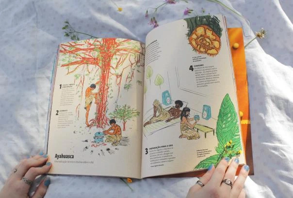
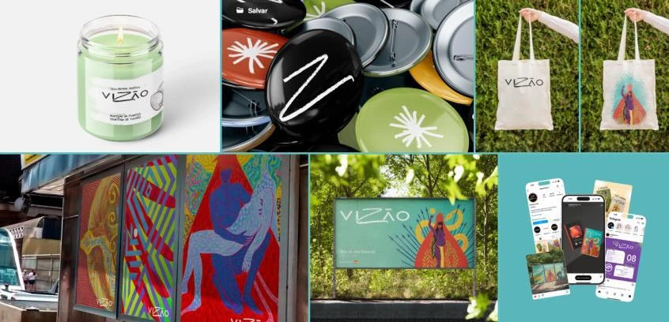

VIZÃO
VIZÃO is an academic editorial project developed around the theme of health, with a specific focus on climate anxiety. The magazine takes the form of a survival tutorial for the end of the world, offering a spiritual, cultural guide rooted in ancestral knowledge for young people facing the uncertainties of a future shaped by the climate crisis.
The project draws on Ailton Krenak’s concept of “Ancestral Future” and Ubuntu philosophy, bringing different temporalities and perspectives together to question the idea of a linear future. The magazine seeks to break through colonial boundaries and center Indigenous peoples throughout the Americas, valuing knowledge, stories and traditions that have historically been erased or silenced.
Visually, VIZÃO’s identity reinforces this connection to ancestry through a handmade, organic and craft-based language. The publication uses hand-drawn artwork, illustrations and graphic elements inspired by Brazilian Indigenous art. This approach moves away from a rigid digital aesthetic, bringing texture, imperfection and a more human quality to the publication.
VIZÃO’s editorial structure has three axes: past, present and future. More than a timeline, they offer different paths for reflection: the past recovers ancestral knowledge and traditions; the present explores the issues and struggles finding a voice today; and the future proposes paths, provocations and possibilities for imagining new ways of living.
Beyond informing readers about the climate crisis, VIZÃO seeks to reconnect them with life, nature and ancestry. Its visual and editorial language looks to earlier knowledge to question the present and imagine new futures. It turns anxiety about the future into an invitation to reflect, connect and build other possibilities.

